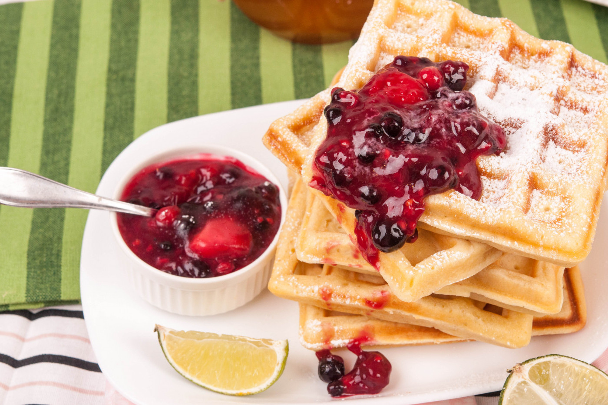

Палачинките са си палачинки и са най-любимата “специална закуска”! Но има още нещо, което малки и голем обичат да си похапват за закуска и това са гофретите. А рецептата за гофрети е толкова лесна и те се приготвят толкова бързо! Следвайки класическата рецепта за гофрети получаваме цял куп сладки гофрети, които се комбинират, както с любимото ви сладко, така и с мед и орехи, а разбира се и с течен шоколад.
📖
Лесна
⏱️
25 мин.
🍴
8